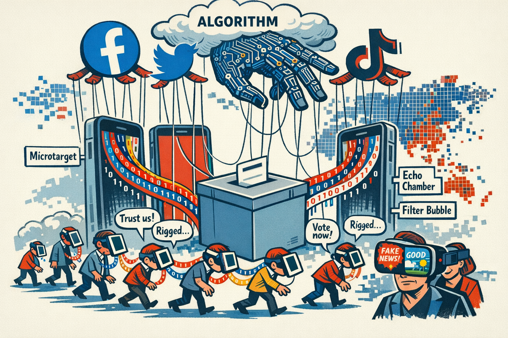
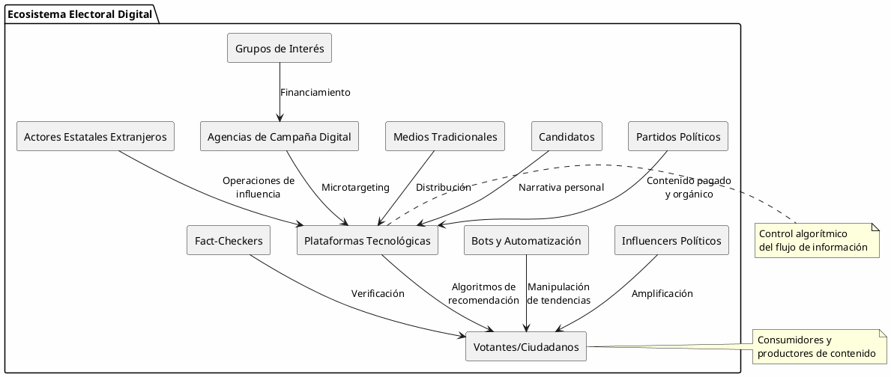
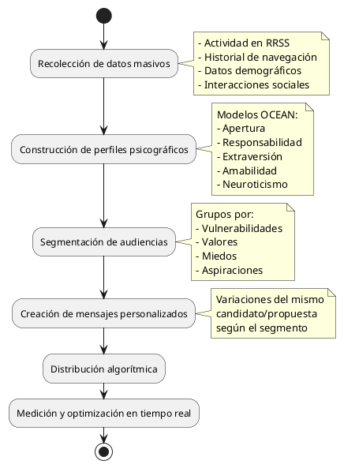

La Arquitectura Digital del Poder: Redes Sociales y Procesos Electorales en la Era de la Política Algorítmica
La Arquitectura Digital del Poder: Redes Sociales y Procesos Electorales en la Era de la Política Algorítmica

Introducción: El Nuevo Campo de Batalla Electoral
La intersección entre tecnología y política ha generado una transformación sin precedentes en la forma en que se desarrollan los procesos electorales. Las redes sociales no son simplemente plataformas de comunicación: se han convertido en infraestructuras críticas del poder político contemporáneo, espacios donde se libran batallas por la narrativa, la identidad y, en última instancia, por el control del Estado.
Desde la "Primavera Árabe" de 2011 hasta las elecciones presidenciales estadounidenses de 2024, hemos sido testigos de cómo el espacio digital ha reconfigurado el mapa político global. Sin embargo, esta transformación no es neutral ni democrática por defecto. Como todo cambio tecnológico significativo, ha generado nuevos centros de poder, nuevas vulnerabilidades y nuevas formas de exclusión.
Este análisis examina críticamente el ecosistema de las redes sociales en relación con los procesos electorales, identificando ganadores y perdedores, mecanismos de influencia y las implicaciones geopolíticas de esta revolución digital.
El Ecosistema Digital Electoral: Actores y Dinámicas
Taxonomía de Actores en el Espacio Digital Electoral

Las Plataformas como Actores Geopolíticos
Las grandes plataformas tecnológicas (Meta, X/Twitter, TikTok, YouTube) no son meros intermediarios neutrales. Operan como:
- Curadores algorítmicos: Deciden qué contenido ve cada usuario, con impacto directo en la formación de opinión
- Reguladores de facto: Establecen políticas de contenido que determinan qué discurso político es permisible
- Repositorios de datos: Acumulan información conductual que permite segmentación política extremadamente precisa
- Actores geopolíticos: Sus decisiones tienen consecuencias internacionales, como el bloqueo de Trump en 2021 o las restricciones a TikTok
| Plataforma | Usuarios Activos (2025) | Modelo de Negocio Principal | Sesgo Algorítmico Documentado |
|---|---|---|---|
| Meta/Facebook | 3.0 mil millones | Publicidad dirigida | Favorece contenido emocional/divisivo |
| X/Twitter | 550 millones | Suscripciones + publicidad | Variable según gestión (Musk) |
| TikTok | 1.7 mil millones | Publicidad + comercio | Favorece contenido viral/entretenido |
| YouTube | 2.7 mil millones | Publicidad | Favorece tiempo de visualización |
| 2.0 mil millones | Publicidad dirigida | Favorece contenido visual atractivo | |
| Telegram | 900 millones | Suscripciones premium | Mínima moderación |
Mecanismos de Influencia: Cómo las RRSS Alteran el Proceso Electoral
Microtargeting y Segmentación Psicográfica
El caso Cambridge Analytica (2016-2018) reveló públicamente lo que ya era práctica común: el uso de datos masivos para crear perfiles psicológicos y dirigir mensajes políticos personalizados. Esta técnica representa un salto cualitativo respecto a la publicidad política tradicional.

Implicaciones críticas:
- Erosión del espacio público común: Los votantes ya no comparten la misma "realidad informativa"
- Falta de transparencia: Los mensajes políticos no son verificables por terceros
- Manipulación emocional: Se explotan vulnerabilidades psicológicas individuales
- Ventaja asimétrica: Beneficia a actores con mayor capacidad económica y tecnológica
Desinformación y Operaciones de Influencia
La desinformación electoral en redes sociales opera en múltiples niveles:
- Falsedades directas: Noticias completamente fabricadas
- Contenido engañoso: Información verdadera presentada fuera de contexto
- Contenido manipulado: Deepfakes, videos editados, imágenes alteradas
- Contenido impostor: Cuentas falsas haciéndose pasar por instituciones
- Contenido fabricado: Información completamente falsa presentada como real
| Tipo de Desinformación | Velocidad de Difusión | Dificultad de Detección | Impacto Electoral |
|---|---|---|---|
| Falsedades simples | Alta | Baja | Medio |
| Deepfakes | Media | Alta | Muy Alto |
| Narrativas conspirativas | Media-Alta | Alta | Alto |
| Manipulación de contexto | Alta | Media | Alto |
| Bots coordinados | Muy Alta | Media | Medio-Alto |
Cámaras de Eco y Polarización Algorítmica
Los algoritmos de recomendación optimizan el "engagement" (participación), no la calidad informativa ni el debate democrático. Esto genera:
- Filter bubbles: Exposición principalmente a contenidos que confirman creencias previas
- Polarización afectiva: Aumento del rechazo emocional hacia grupos políticos opuestos
- Radicalización en cascada: Los algoritmos pueden conducir a contenidos progresivamente más extremos
Ciclo de polarización algorítmica: Usuario consume contenido político → Algoritmo identifica preferencia → Recomienda contenido similar pero más intenso → Usuario se polariza → Participa más intensamente → Algoritmo interpreta como "engagement positivo" → Recomienda contenido aún más polarizado → [CICLO SE REPITE]
Impacto Diferencial: Ganadores y Perdedores
Los Ganadores del Ecosistema Digital Electoral
Plataformas Tecnológicas
Beneficios obtenidos:
- Ingresos publicitarios masivos durante ciclos electorales (se estiman $10-15 mil millones solo en EE.UU. 2024)
- Consolidación de su rol como infraestructura política crítica
- Datos valiosos sobre comportamiento político
- Influencia sobre marcos regulatorios
Actores Antisistema y Outsiders
Las RRSS han democratizado el acceso a la comunicación política, beneficiando especialmente a:
- Candidatos sin acceso a medios tradicionales
- Movimientos políticos emergentes
- Figuras polarizantes que generan engagement
- Partidos anti-establishment
Casos ejemplares:
- Donald Trump (EE.UU., 2016): Uso magistral de Twitter para bypass mediático
- Movimiento 5 Estrellas (Italia): Organización y movilización vía redes
- Jair Bolsonaro (Brasil, 2018): Campaña fundamentalmente digital
- Javier Milei (Argentina, 2023): Viralización en TikTok/X de un outsider libertario
Agencias de Campaña Digital y Consultores
Nueva industria multimillonaria especializada en:
- Análisis de datos electorales
- Creación de contenido viral
- Gestión de reputación digital
- Operaciones de influencia
Actores Estatales con Capacidades de Ciberoperaciones
Países con capacidades avanzadas pueden:
- Influir en elecciones extranjeras con bajo costo
- Amplificar divisiones sociales
- Desinformar masivamente
- Hackear y filtrar información estratégicamente
| País | Capacidad de Influencia | Casos Documentados |
|---|---|---|
| Rusia | Muy Alta | EE.UU. 2016, Francia 2017, Brexit 2016 |
| China | Alta | Taiwán (múltiples), Hong Kong 2019 |
| Irán | Media | EE.UU. 2020 |
| Corea del N. | Media-Baja | Corea del Sur (múltiples) |
Los Perdedores del Nuevo Paradigma
Medios Tradicionales
- Pérdida de control sobre la agenda informativa
- Disminución de ingresos publicitarios
- Menor capacidad de verificación efectiva
- Competencia asimétrica con contenido no verificado
Instituciones Democráticas Tradicionales
- Partidos políticos establecidos pierden mediación
- Instituciones electorales enfrentan nuevos desafíos de verificación
- Poder legislativo reacciona lentamente ante cambios tecnológicos
- Erosión de confianza institucional acelerada por narrativas digitales
Votantes con Baja Alfabetización Digital
Brecha digital como nueva forma de exclusión:
- Adultos mayores más vulnerables a desinformación
- Poblaciones con menor acceso tecnológico quedan excluidas
- Grupos con menor educación digital son objetivos más fáciles de manipulación
La Verdad Factual y el Debate Informado
- Velocidad supera verificación
- Emocionalidad supera racionalidad
- Espectacularización supera sustancia
- Fragmentación supera consenso
"En la era de las redes sociales, una mentira puede dar la vuelta al mundo mientras la verdad se está poniendo los zapatos. Y cuando la verdad finalmente llega, la mentira ya ha generado miles de variaciones y millones de interacciones." — Adaptación del aforismo atribuido a Mark Twain
Casos de Estudio: Elecciones Transformadas por RRSS
Estados Unidos 2016: El Punto de Inflexión
Contexto: Primera elección presidencial donde las RRSS fueron definitivas.
Elementos clave:
- Cambridge Analytica y microtargeting en Facebook
- Interferencia rusa documentada (Reporte Mueller)
- Trump como fenómeno nativo de Twitter
- Polarización sin precedentes
Resultado: Victoria de Trump pese a perder voto popular, con márgenes estrechos en estados clave donde hubo intensas operaciones digitales.
Brasil 2018: WhatsApp como Arma Electoral
Contexto: WhatsApp es la plataforma dominante en Brasil con penetración masiva.
Elementos clave:
- Campañas masivas de desinformación vía WhatsApp
- Uso de grupos privados dificulta verificación y regulación
- Bolsonaro construye narrativa anti-establishment completamente digital
- Asesinato del candidato en plena campaña amplifica tensión
Resultado: Victoria de Bolsonaro con uso estratégico de mensajería encriptada que evadió regulación electoral tradicional.
Elecciones Europeas: TikTok y la Nueva Generación
Contexto: Elecciones al Parlamento Europeo 2024, primera gran elección con TikTok como factor significativo.
Elementos clave:
- Candidatos jóvenes de extrema derecha dominan TikTok
- Formato de video corto favorece mensajes simplificados y emocionales
- Algoritmo de TikTok particularmente opaco
- Preocupación por control chino de la plataforma
Resultado: Avance significativo de partidos de extrema derecha, especialmente entre votantes jóvenes, correlacionado con presencia en TikTok.
Respuestas Institucionales y Regulatorias
Modelos Regulatorios Emergentes
| Modelo | Características Principales | Fortalezas | Debilidades | Ejemplos |
|---|---|---|---|---|
| Libertario | • Autorregulación | Protección robusta | Alta vulnerabilidad | EE.UU. |
| (Pre-2020) | • Primera Enmienda | de libertad de expresión | a manipulación | (pre-2020) |
| • Intervención estatal mínima | Innovación sin trabas | Desinformación rampante | ||
| • Confianza en mercado | Falta de accountability | |||
| Europeo | • Digital Services Act (DSA) | Marco legal comprehensivo | Complejidad de | Unión Europea |
| • Digital Markets Act (DMA) | Protección de datos (GDPR) | implementación | Reino Unido | |
| • Transparencia algorítmica | Fact-checking institucionalizado | Dependencia de plataformas | (post-Brexit) | |
| • Verificación obligatoria | Multas significativas | extranjeras | ||
| Autoritario | • Control estatal directo | Control total del | Supresión sistemática | China |
| • Censura sistemática | narrativo político | de libertades | Rusia | |
| • Plataformas nacionales | Eliminación de disidencia | Ausencia de debate genuino | Irán | |
| • Gran Firewall | Soberanía digital absoluta | Pérdida de legitimidad | Corea del Norte | |
| Híbrido | • Regulación reactiva/ad-hoc | Flexibilidad contextual | Inconsistencia regulatoria | India |
| (Pragmático) | • Suspensiones temporales | Respuesta rápida a crisis | Riesgo de arbitrariedad | Brasil |
| • Presión política a plataformas | Adaptación a situación local | Falta de marco jurídico estable | México | |
| • Negociación caso por caso | Susceptible a presión política | Turquía |
Análisis Crítico de cada Modelo
- Modelo Libertario: La Ilusión del Mercado de Ideas
El modelo libertario asume que en un "mercado libre de ideas", la verdad prevalecerá naturalmente. Sin embargo, los algoritmos no son neutrales: optimizan engagement, no veracidad. La libertad absoluta en redes sociales ha demostrado producir:
- Amplificación de contenido divisivo y emocional
- Ventajas asimétricas para actores mal intencionados
- Erosión de confianza institucional sin mecanismos de corrección
- Modelo Europeo: Ambición Regulatoria sin Soberanía Tecnológica
Europa intenta regular lo que no controla. Aunque el DSA/DMA son marcos legales ambiciosos, enfrentan:
- Dependencia total de plataformas estadounidenses y chinas
- Dificultad de enforcement sobre actores globales
- Riesgo de que las multas sean simplemente "costo de hacer negocios"
- Brecha entre regulación formal y capacidad técnica de implementación
- Modelo Autoritario: Efectividad a Expensas de Legitimidad
Los regímenes autoritarios han "resuelto" el problema de la desinformación eliminando el pluralismo informativo. Pero:
- La ausencia de disenso online no equivale a consenso genuino
- Genera incentivos para VPNs, herramientas de evasión y mercados negros informativos
- Costos reputacionales internacionales significativos
- Fragilidad estructural: el control absoluto requiere vigilancia cada vez más invasiva
- Modelo Híbrido: Pragmatismo o Inconsistencia
Los países en desarrollo adoptan enfoques pragmáticos que combinan:
- Aprendizajes de otros modelos
- Adaptación a capacidades institucionales limitadas
- Respuestas a crisis específicas
Pero la falta de coherencia genera:
- Incertidumbre regulatoria para plataformas
- Oportunidades para captura regulatoria
- Dificultad para construcción de jurisprudencia estable
Efectividad de Medidas Anti-Desinformación
| Medida | Efectividad | Costos/Riesgos | Implementación |
|---|---|---|---|
| Fact-checking independiente | Media | Efecto retardado, alcance limitado | Amplia |
| Etiquetas de advertencia | Baja-Media | Efecto backfire posible | Amplia |
| Eliminación de contenido | Media-Alta | Censura, efecto Streisand | Selectiva |
| Suspensión de cuentas | Alta | Libertad expresión, arbitrariedad | Selectiva |
| Transparencia algorítmica | Alta (potencial) | Resistencia de plataformas | Muy limitada |
| Alfabetización mediática | Alta (LP) | Requiere inversión sostenida | Incipiente |
| Regulación legal | Variable | Riesgo autoritario | En desarrollo |
El Dilema Regulatorio
Las democracias enfrentan una tensión fundamental:
- Necesidad de regular para proteger integridad electoral
- Riesgo de censura que erosione libertades fundamentales
- Velocidad tecnológica que supera capacidad legislativa
- Jurisdiccionalidad limitada sobre plataformas globales
Paradoja regulatoria: Más regulación → Más control sobre desinformación PERO Mayor riesgo de censura Menos regulación → Más libertad de expresión PERO Mayor vulnerabilidad a manipulación No existe solución perfecta, solo trade-offs que cada sociedad debe negociar.
Prospectiva: El Futuro de las Elecciones en la Era Digital
Tendencias Tecnológicas Emergentes
Inteligencia Artificial Generativa
- Deepfakes políticos: Videos falsos indistinguibles de reales
- Generación automatizada de contenido: Bots que crean narrativas coherentes
- Personalización extrema: Mensajes políticos generados específicamente para cada votante
- Asistentes de IA partidistas: Chatbots que debaten y persuaden
Realidad Aumentada y Metaverso
- Eventos de campaña virtuales: Mítines en espacios digitales
- Canvassing digital: Puerta a puerta en entornos virtuales
- Nuevas formas de verificación: AR para contrastar discursos con hechos en tiempo real
Blockchain y Verificación
- Votación electrónica: Sistemas distribuidos de votación
- Verificación de contenido: Cadenas de autenticidad para contenido político
- Financiamiento transparente: Trazabilidad de donaciones
Escenarios Posibles para 2030
Escenario A: Autoritarismo Digital
- Consolidación del control estatal sobre plataformas
- Uso masivo de IA para vigilancia y manipulación
- Elecciones como ritual sin sustancia democrática
- Fragmentación de internet en "soberanías digitales"
Escenario B: Caos Informativo
- Proliferación descontrolada de deepfakes
- Imposibilidad de verificar autenticidad
- Colapso de confianza en cualquier contenido
- Violencia política amplificada por desinformación
Escenario C: Regulación Equilibrada
- Marcos regulatorios globales efectivos
- Transparencia algorítmica obligatoria
- Alfabetización digital universal
- Nuevas instituciones de verificación independiente
Escenario D: Tecno-Oligarquía
- Control concentrado en pocas plataformas
- Decisiones algorítmicas opaques determinan elecciones
- Erosión de soberanía estatal ante poder tecnológico
- Democracia nominal con poder efectivo en Silicon Valley
Escenario más probable: Combinación heterogénea con elementos de todos, variando según región y nivel de desarrollo democrático.
Conclusiones: Reconfiguración del Poder Político
Transformaciones Estructurales Irreversibles
Las redes sociales han alterado permanentemente:
- La geografía de la comunicación política: Del espacio público físico al espacio digital fragmentado
- La economía política de las campañas: De broadcast masivo a microtargeting personalizado
- La epistemología democrática: De verdades compartidas a realidades paralelas
- La soberanía informativa: De control estatal a gobernanza algorítmica privada
El Mapa: Geopolítica de las Redes Sociales
Control de plataformas como ventaja geopolítica:
- EE.UU. domina el ecosistema global (Meta, X, Google/YouTube)
- China construye ecosistema paralelo (WeChat, Douyin, Weibo)
- Europa regula pero no controla infraestructura
- Sur Global consume sin control sobre plataformas
Nueva cartografía del poder:
- Centros tecnológicos (Silicon Valley, Shenzhen) > Capitales políticas tradicionales
- Flujos de datos > Flujos de capital tradicional
- Guerras informativas > Guerras convencionales
El Código: Algoritmos como Constitución Invisible
Los algoritmos de las redes sociales funcionan como:
- Constitución algorítmica: Reglas que determinan qué discurso se amplifica
- Poder legislativo automatizado: Cambios de código modifican reglas del juego
- Poder judicial opaco: Decisiones de moderación sin apelación transparente
El código es ley, pero a diferencia de las leyes tradicionales, el código algorítmico es propietario, secreto y modificable sin proceso democrático.
Recomendaciones Estratégicas
Para Instituciones Democráticas:
- Invertir masivamente en alfabetización digital ciudadana
- Crear instituciones independientes de verificación y transparencia algorítmica
- Desarrollar marcos regulatorios que equilibren libertad y protección
- Considerar infraestructura digital pública como alternativa
Para Ciudadanos:
- Desarrollar escepticismo informado (no cinismo paralizante)
- Diversificar fuentes de información
- Comprender mecanismos de manipulación
- Participar en demandas de transparencia
Para Investigadores y Analistas:
- Acceso a datos de plataformas para investigación independiente
- Desarrollo de herramientas de detección de manipulación
- Análisis comparativo de modelos regulatorios
- Prospectiva sobre tecnologías emergentes
Reflexión Final
La influencia de las redes sociales en los procesos electorales no es una anomalía temporal ni un problema técnico que pueda "solucionarse" con mejores algoritmos o más fact-checking. Representa una transformación fundamental en la naturaleza misma de la política democrática.
Estamos ante una reconfiguración del poder político comparable a la invención de la imprenta, el telégrafo o la televisión, pero con una velocidad y alcance sin precedentes. La pregunta no es si las redes sociales continuarán influyendo en las elecciones — la respuesta es obviamente afirmativa — sino qué tipo de democracia queremos construir en este nuevo entorno tecnológico.
El desafío civilizatorio de nuestra época es diseñar instituciones, regulaciones y prácticas que preserven los valores democráticos fundamentales (deliberación informada, igualdad política, rendición de cuentas) en un ecosistema tecnológico que, por diseño, prioriza el engagement, la personalización y la velocidad sobre la verdad, la equidad y la reflexión.
El mapa político se redibuja constantemente. El código que lo gobierna permanece mayormente invisible. Nuestra tarea es hacer visible ese código y reclamar el derecho colectivo a escribirlo democráticamente.
Referencias y Recursos Adicionales
Bibliografía Académica Fundamental
- Zuboff, S. (2019). The Age of Surveillance Capitalism. PublicAffairs.
- Tufekci, Z. (2017). Twitter and Tear Gas: The Power and Fragility of Networked Protest. Yale University Press.
- Woolley, S. C., & Howard, P. N. (2018). Computational Propaganda: Political Parties, Politicians, and Political Manipulation on Social Media. Oxford University Press.
- Persily, N., & Tucker, J. A. (2020). Social Media and Democracy: The State of the Field, Prospects for Reform. Cambridge University Press.
- Vaidhyanathan, S. (2018). Antisocial Media: How Facebook Disconnects Us and Undermines Democracy. Oxford University Press.
- Bradshaw, S., & Howard, P. N. (2019). "The Global Disinformation Order: 2019 Global Inventory of Organised Social Media Manipulation". Oxford Internet Institute.
Informes y Estudios Clave
- Mueller Report (2019). "Report On The Investigation Into Russian Interference In The 2016 Presidential Election". U.S. Department of Justice.
- European Commission (2022). "Code of Practice on Disinformation - 2022 Strengthened Version".
- Freedom House (2024). "Freedom on the Net 2024: The Repressive Power of Artificial Intelligence".
- NATO StratCom (2023). "Cognitive Warfare: The Future of Cognitive Dominance".
Recursos de Monitoreo y Verificación
- EU DisinfoLab: https://www.disinfo.eu/
- First Draft News: https://firstdraftnews.org/
- DFRLab (Atlantic Council): https://www.atlanticcouncil.org/programs/digital-forensic-research-lab/
- Oxford Internet Institute - Computational Propaganda Project
- MIT Media Lab - Laboratory for Social Machines
Bases de Datos y Herramientas
- Facebook Ad Library: Transparencia en publicidad política
- Twitter Transparency Center: Reportes de operaciones de influencia
- Google Transparency Report: Solicitudes gubernamentales y contenido político
- ProPublica's Political Ad Collector: Archivo colaborativo de anuncios políticos
—